| 多伦多春天迎来百年五四暨北大校庆 |
|
五月 04, 2019
多伦多春天迎来百年五四暨北大校庆 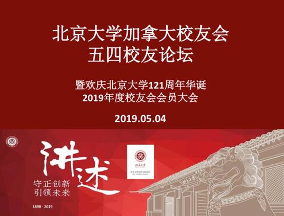 2019年5月4日，我有幸参加北京大学加拿大校友会校庆，庆祝百年五四，北大母校121华诞。活动内容简单丰富：庆祝母校建校121週年；2019年校友会会员年度大会及财务报告；校友会新增理事选举；五四论坛讲座；校友间交流活动。 陆续到场的北大人，见面分外亲热，熟络不熟络都友好的握手问好。看到一张张热情洋溢的笑容，不时听到谈笑风生、爽朗轻快的笑声，深受感染，禁不住按下快门留住每一个美好的瞬间。 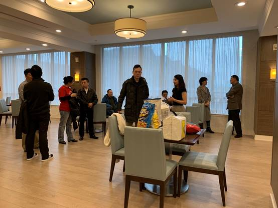 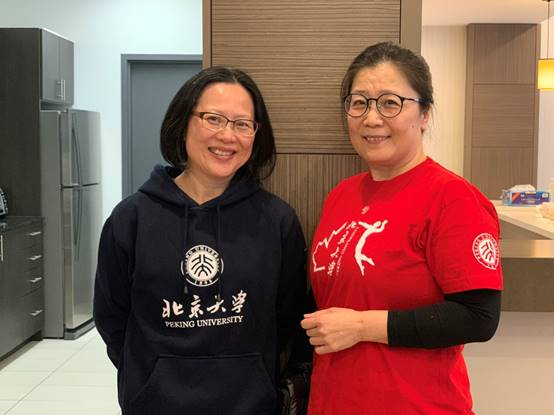 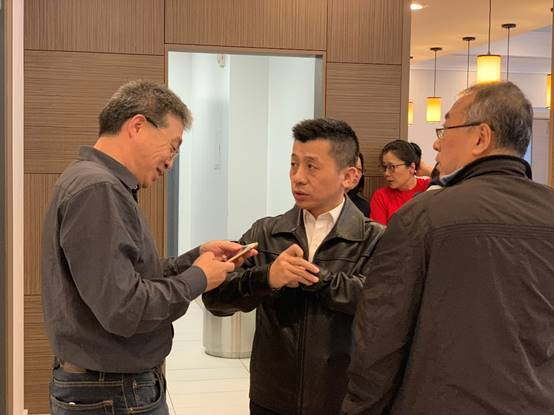 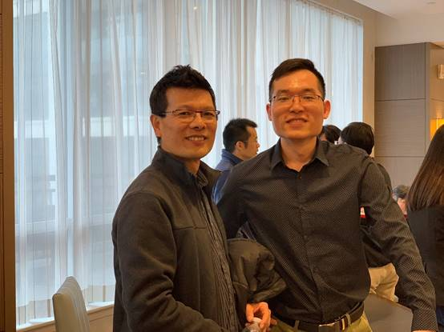 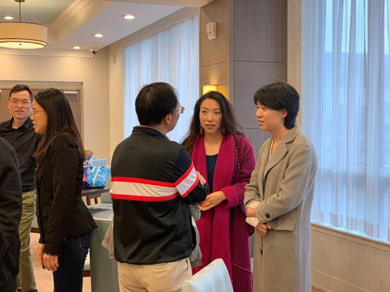 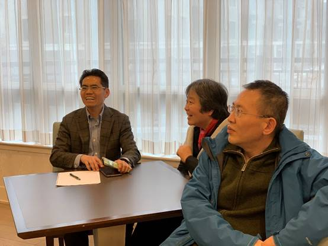 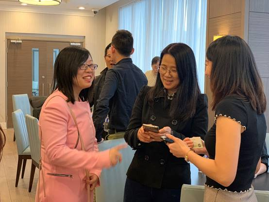 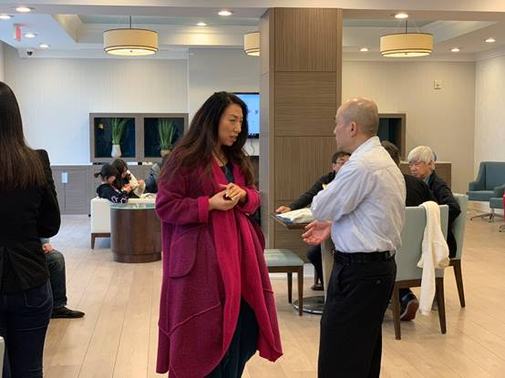 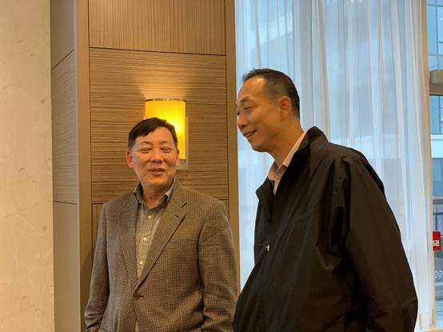 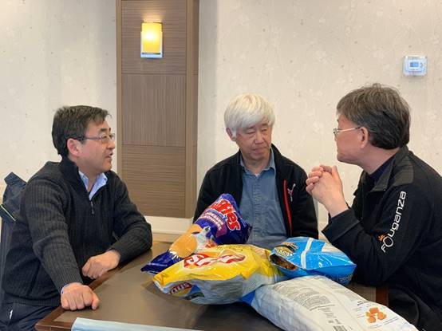 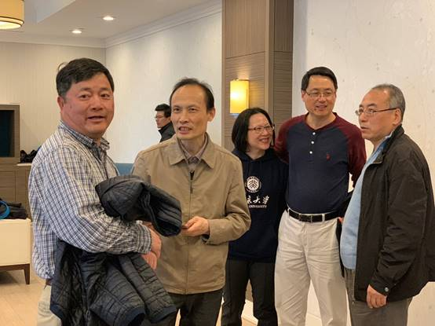 活动开始，所有人在王燕云师姐的带领下用宏亮风趣的歌声共祝母校121週年，师姐声音婉转如清晨一袭暖阳，温暖的徵求意见：进餐和议程先后，统一决定先进餐后，师姐让大家在规定时间结束进餐开始当天的议程。 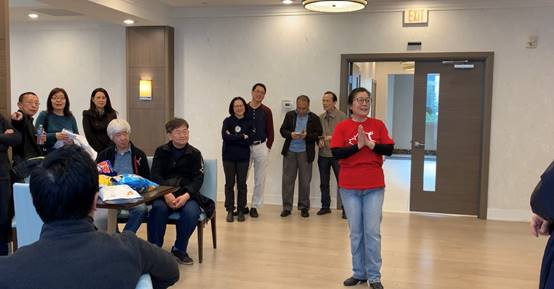 不辞辛劳的谢晓宏师兄为大家准备了可口美味的饭菜，也是北大人齐聚一堂共饮就餐畅所欲言的欢乐时光：有序的排队各取所需，随意一瞥脸上都挂著耐心，放眼看去盘子裡都是少量，不够再加的。 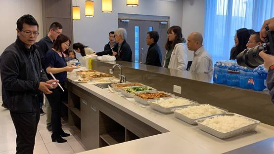 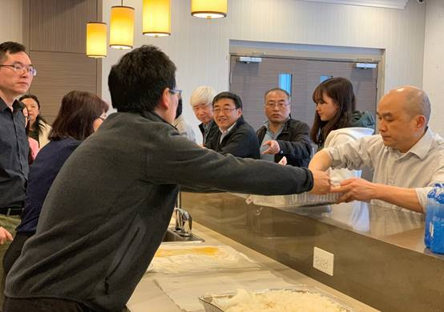 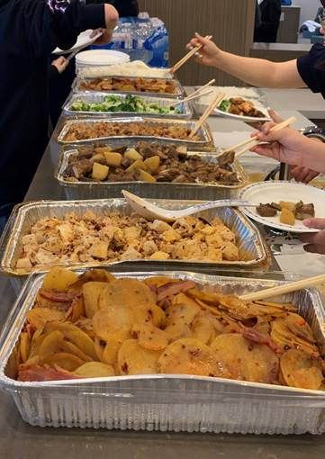 接下来按照活动流程先由廖博文师兄汇报财务明细，所报帐目清晰无误，并感谢一直支持和赞助校友会活动的全体校友。 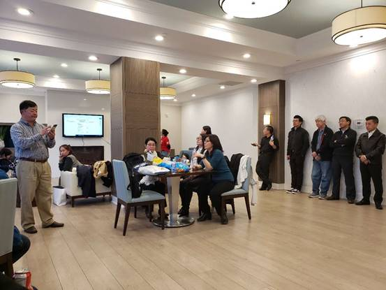 然后重头戏是对现任会长陈小平连续2届4年工作的肯定，以及为北大加拿大校友们的无私付出表示衷心的感谢，也希望其卸任后继续协助新的会长快速接手。于此，全体人员给予热烈的掌声，卸任会长陈小平用笑容和深鞠躬答谢大家4年的信任与支持。我想，在这个物欲横流的时代，做人做事不虚伪，不圆滑，以真诚、淳朴的心待人，算得上真正的素心之人。 接著由谢晓宏师兄主持，介绍经过选举理事会慎重考量后新增的4位新理事：王宏伟，肖焕立，金朝武，贺卫军，新理事们分别做了完整的自我介绍，听罢，不禁感叹北大人个个都是好样的，相信新鲜血液的融入会让北大凝聚力、领导力、亲和力逐步螺旋式上升，期待！ 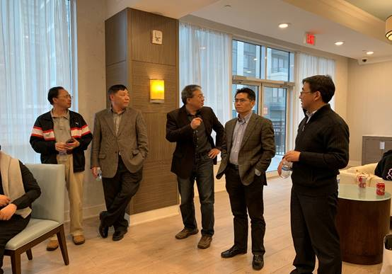 最后还是由谢晓宏师兄向大家综合阐述如何投资理财，并进行了分组讨论，Sunny校友向大家分享了孩子在教育方面和升学的不同阶段心理层面的经验。 时间过得很快，校庆会不知不觉接近尾声。我看著其乐融融的这样一个普通的团队，有些神秘，有些奇特，又有著别样的质朴。是的，这个团队裡总有一些人，在你想不到的地方，关心著你，替你做了你没有想到的事，什么也不图，真好。《青春寄语》里说：教养不是轻易地从别处买来，贴在身上的调性，而是你本人的生命里侧，皮肤底层，渗透出来的光彩夺目的情操。是的，他们身上应该就是这种自然流露的光彩吸引著我，本来无一物，何处惹尘埃。只有将生命中的杂质沉淀过滤，淡然面对一切浮世纷扰，才能看见内心的丰盈，尝出生活的真味。 尽管北大团队裡我认识的人不多，却用自己有限的认知非常确定，经过不长不短的接触，有两位值得我敬重的人——李皘姐姐和陈小平会长。 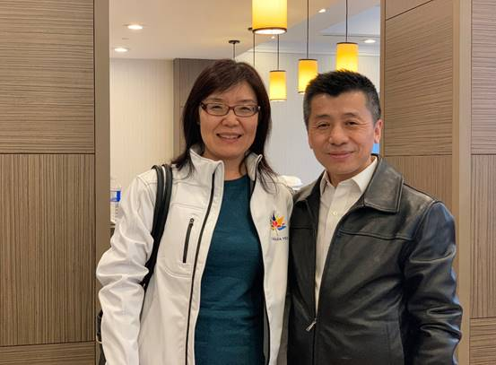 李皘姐姐的美，是几分笃定、些许自信、更多从容日复一日的淬炼，是骨相与气质沉淀的加成。陈小平会长的帅，是高标准要求自己，放低姿态悄悄示弱，冷酷十足却不飞扬跋扈，如幽兰一般清香淡远，乃真君子风度。他们言语不多，却用我能看到的最朴素的心应对繁複洗涤浮躁，用我能感受到的心平气和的态度面对生活。正因为如此，他们无处不横溢出对人最平实的关爱，他们是北大团队流光溢彩最好的体现，也是当仁不让的北大人文精神的最佳诠释。 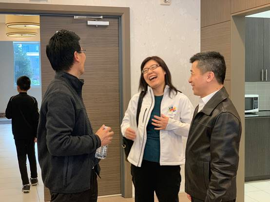 北大加拿大校友会新义工团队的整合，或许还有一个适应的过程。自然法则原本如此，人们对新事物都会从刚开始的不习惯甚至不理解，到慢慢开始尝试，再到接受、欣赏，逐渐渗透和调节，达成协调从而统一，这个过程并不是坏事，源于每个人的喜好、风格、心胸都不必千篇一律。 我一直深以为然：人无癖，不与可交，以其无深情也；人无疵，不可与交，以其无真气也。 校庆活动散场，我预祝北京大学加拿大校友会2019年5月开启新篇章，越来越好！ 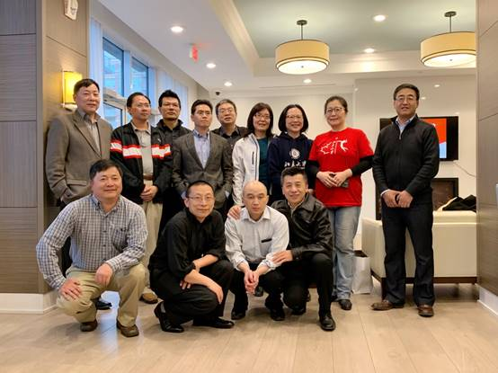 后记：我喜欢这个团队里我认识的每个人，刚认识的王燕云师姐，认识不久的陈樱、左朝师姐、时间不长却能是闺蜜级别的李建华，因为乒乓球赛认识的所有队员如方鹏、汪涛、李铭龙等，因为排球结缘的李莉师姐和海林师兄、及一众排球队员，因为舞蹈认识的Tina师姐以及一群好姐妹，因为家宴帮助我的潘远翊（当之无愧的老好人）、孙智卿、李林师姐（老乡级别人物），还有很多我叫不上名字的和蔼可亲的你们，正是因为有你们的无私，正能量赋予使命，愿大洋彼岸的你们阳光、热情、积极，充满活力，我们不刻意追寻完美，正是不完美，才让在这个世界的我们幸福。 胡婷娜（北大家属） 2019年5月6日 |